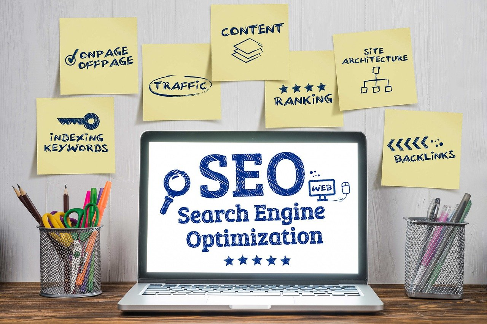

Alt du trenger å vite om SEO
04.11.2020
Hva er SEO?
SEO, som er en forkortelse for Search Engine Optimization (Søkemotoroptimalisering på norsk), er prosessen med konfigurering og forbedringer vi gjør på nettstedet for å oppfylle kravene til forskjellige søkemotorer som Google (den mest brukte søkemotoren), med sikte på at nettstedet skal vises på den første søkeresultatsiden, og dermed øke antall besøk på nettstedet.
Hvordan fungerer søkemotorer?
Før vi dykker i den tekniske delen og lærer hvordan vi bruker SEO, er det lurt å vite litt hvordan søkemotorer fungerer.
På en veldig enkel måte: Google, for eksempel, besøker milliarder av nettsider gjennom smarte programmer kalt edderkopper eller crawlere, for å crawle eller skanne og deretter samle all informasjon på sidene. Så går disse edderkoppene tilbake for å lagre og indeksere all denne dataen og informasjonen på Googles servere. Til slutt blir disse nettstedene rangert (basert på noen faktorer som vi kommer til å snakke om) og vises som en liste på søkeresultatsiden i en prosess som kalles rangering (Ranking).
De viktigste tekniske faktorer for SEO forbedring:
1. Innholdskvalitet
Den viktigste måten å forbedre SEO-rangeringen din er å produsere unikt innhold av høy kvalitet. Når du øker kvaliteten på innholdet ditt, vil søkemotorene bedre forstå innholdet på nettstedet ditt. Målet med søkemotorer er å gi brukerne verdi og kvalitet, så hvis innholdet er av dårlig kvalitet og uten verdi, vil brukeren ikke føle seg fornøyd og vil forlate nettstedet ditt umiddelbart.
Her er noen tips for å øke kvaliteten på innholdet ditt:
Nøkkelord
Dette er veldig viktig for å forbedre SEO. Du må finne ut hvilke ord en bruker sannsynligvis skriver når han søker i søkemotorer for emnet du skriver i. En god teknikk for å forbedre rangering av sider i søkemotorer er tetthetsnøkkelord. Derfor må du gjenta dette ordet flere ganger i artikkelen, omtrent 2% av lengden på teksten. Du kan bruke verktøy som Google Trends og AnswerThePublic for å få hjelp til å analysere/bygge søkeord- og fraser.
Alternativ tekst for bilder
Når du legger til et bilde, må du også legge til Alt-attributtet, som er tekst som søkemotoren vil lese for å kjenne innholdet i bildet og indeksere det.
Side tittel
Overskriften er veldig viktig fordi den uttrykker innholdet på siden, og det er et nødvendig element for søkemotorer å forstå innholdet. Du må velge en unik og særegen tittel for hver side på nettstedet ditt, med en passende lengde som ikke overstiger 65 tegn. Det er også veldig viktig å bruke målnøkkelordet i hovedtittelen på siden. Sørg også for å bruke riktig format for underoverskriftene som < h2 > og < h3 > for å gjøre det lettere å lese.
Meta Beskrivelse
Sidebeskrivelsen er den komplementære delen av tittelen som kort forklarer innholdet på siden og er veldig viktig for å tiltrekke brukerens oppmerksomhet. Du bør også bruke målnøkkelordet i sidebeskrivelsen. Den passende sidebeskrivelseslengden er mindre enn 160 tegn.
Side URL
Lenken er et av de viktigste elementene i SEO, den skal være unik, kort og inneholde målsøkeordet. Sørg også å bruke interne og eksterne lenker fordi det vil bidra til å berike innholdet på siden og koble innholdet på nettstedet ditt sammen. Gjennom interne lenker kan du lede den besøkende til en annen relevant side, så det er en smart måte å markedsføre dine andre artikler på nettsiden. I tillegg vil kobling av nettstedet internt gjøre det lettere for søkemotorer å gjennomsøke nettstedet ditt godt. Bruk av eksterne lenker gjør emnet ditt mer pålitelig ved å bruke lenker fra pålitelige kilder.
2. Sørg for å opprette en sitemap.xml-fil
XML Sitemap er en måte å organisere innholdet på nettstedet ditt. Den forteller søkemotorer hvilke sider som er viktigst på nettstedet for å hjelpe crawlere med å indeksere sidene på nettstedet. Denne filen inneholder alle lenkene på nettstedet ditt. Du kan generere et XML Sitemap enkelt og gratis på denne nettsiden. Deretter må filen plasseres i hovedmappen.
3. Sørg for å opprette en robots.txt-fil
Det er en tekstfil som er opprettet i hovedmappen på nettstedet og inneholder et sett med instruksjoner som gir veibeskrivelse til edderkoppene for å fortelle dem hva de har tilgang til og hva de ikke får tilgang til.

Nå skal jeg analysere siden i et SEO verktøy (Lighthouse) før jeg optimaliserer den.
Her er resultatene etter litt optimalisering av siden.
Som vi kan se så jeg fikk bedre resultater etter at jeg har legget til følgende meta tagger: